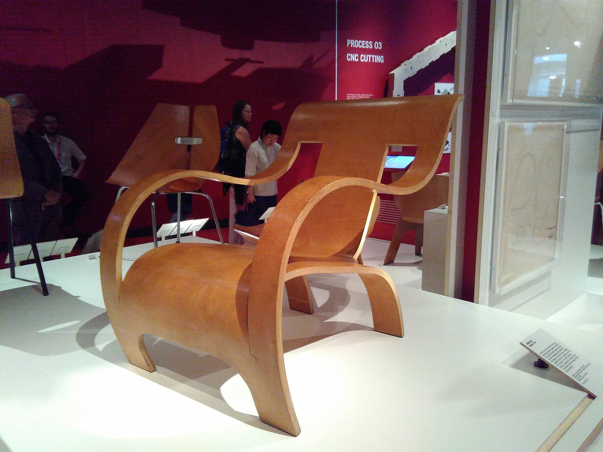

Du entwickelst ein Möbelstück für einen echten Bedarf – als Modell aus Eisstielen oder in Originalgröße aus Dachlatten. Du planst, baust, prüfst und verbesserst.
Einstieg: Bezug zur Reihe „Vom Baum zum Holz“ herstellen – jetzt wird aus dem Wissen über Holz ein eigenes Produkt. Ziel der heutigen Stunde: Alle wissen, wie das Projekt abläuft, welche Entscheidungen sie selbst treffen und wie Lehrgänge funktionieren.
Die Leitfrage
Wie kannst du aus Holz etwas bauen, das einen echten Bedarf erfüllt?
🪑
Was?
Du entscheidest, welches Möbel du baust.
🧭
Welcher Weg?
Modell aus Eisstielen oder Original aus Dachlatte.
👥
Mit wem?
Allein, zu zweit oder zu dritt.
📈
Wie anspruchsvoll?
Du wählst dein Startniveau 1, 2 oder 3.
💡Es gibt keine fertige Bauanleitung. Die Lehrkraft prüft bei der Freigabe nur zwei Dinge: Ist es sicher? Ist es in 6 Wochen schaffbar?
Betonen: Eigeninitiative und Kreativität stehen im Mittelpunkt. Die Ideen, die später gezeigt werden, sind nur ein Notfall-Speicher. Frage an die Klasse: „Was würdet ihr gern bauen, wenn ihr frei wählen dürftet?“ – 2–3 Antworten sammeln.
Zwei Wege · gleich viel wert
Modell oder Originalgröße?
🍦Holz-Eisstiele
Weg M: Holz-Eisstiele
Weg M · Modell
Proportionen, ggf. Maßstab 1:5 oder 1:10
Leimen, Platten herstellen, Furnier
Dekupiersäge für Platten
Test mit Modellfigur oder kleiner Prüflast
🪵Dachlatten
Weg O: Dachlatten aus Fichte oder Tanne, z. B. 24 × 48 mm
Dachlatten sind günstiges Bauholz (meist Fichte/Tanne), das eigentlich auf Dächern verwendet wird – Bild zeigt sie im Einsatz. Wichtig: Ein Modell ist keine „leichte“ Ersatzaufgabe; Modelle können sehr anspruchsvoll sein (Maßstab, Mechanik). Für alle gilt: schleifen und Oberfläche ölen oder lasieren.
Bewertung
Was zählt – und was nicht?
💡
Eigene Idee
Du hast einen echten Bedarf gefunden und selbst entschieden.
📐
Planung
Zeichnung, Maße und Stückliste passen zusammen.
🔧
Fertigung
Du arbeitest maßgenau, sauber und sicher.
✅
Funktion
Dein Möbel besteht deine Prüfkriterien – oder du hast es verbessert.
♻️
Material
Du gehst sparsam mit Material um und kennst deinen Verbrauch.
🔁
Reflexion
Du erklärst, was du warum verändert hast.
✖Nicht bewertet werden: Größe, möglichst viel Traglast, Verzierungen oder wie viele Stiele du verbraucht hast.
Hier Druck rausnehmen: Wer ein kleines, gut durchdachtes Möbel baut, kann genauso gut abschneiden wie ein großes Team. Ein ehrlicher Test, bei dem etwas nicht klappt, ist kein Fehler – wenn danach verbessert wird.
Teamgröße bestimmt den Umfang
Allein, zu zweit oder zu dritt
Allein
Zu zweit
Zu dritt (höchstens)
Weg M Modell
kleines Modell aus einem Baukörper, z. B. Hocker, Ständer, Ablage
größeres Modell oder zwei Möbel, die zusammengehören, z. B. Tisch mit Stuhl
mehrteiliges Modell, z. B. Möbelgruppe oder Zimmerecke
Weg O Original
Kleinmöbel, z. B. Beistelltisch, Buchständer, Ablage
größeres Möbel mit mehreren Baugruppen, z. B. niedriges Regal, Caddy
größeres Möbel oder zwei kombinierbare Module, z. B. Modulregal
Jede Person …
plant und baut alles selbst.
verantwortet mindestens eine eigene Baugruppe.
verantwortet mindestens eine eigene Baugruppe.
📏Größer heißt: mehr Bauteile, mehr Baugruppen, mehr Planung. Größer heißt nicht: höher oder stärker belastbar.
Begriff „Baugruppe“ klären: ein Teil des Möbels, das man getrennt bauen kann (z. B. Gestell, Fachboden, Rückwand). Im Team schreibt jede Person im Teamvertrag (Werkstattheft 2A) auf, wofür sie verantwortlich ist. Jede Person führt ihr eigenes Werkstattheft.
Großprojekt · für mehr als drei Personen
Ein Taschenregal für den Technikraum A3
Im Technikraum liegen Rucksäcke auf dem Boden und im Weg. Gesucht: ein Regal mit 20 Fächern für Rucksäcke. Das schafft kein Team allein.
Lastenheft der Kundschaft
20 Fächer, in jedes passt ein Schulrucksack
höchstens etwa 1,20 m hoch
Module werden verbunden, die Wandbefestigung macht die Lehrkraft
aus Dachlatten, Platten nur nach Absprache
glatte Kanten, geölt oder lasiert, Abstand zum Boden
Das Großprojekt ist ein Angebot, kein Muss. Die Lehrkraft spielt die Kundin/den Kunden. Die Skizze ist nur ein Beispiel – die Planungsgruppe kann andere Modulgrößen begründet vorschlagen. Höhenbegrenzung und Wandbefestigung aus Sicherheitsgründen nicht verhandelbar.
Großprojekt · wie in einem Betrieb
Mehrere Teams – ein Produkt
📐
Planungsteam
Wand in A3 vermessen, Rucksäcke messen und wiegen, Maßraster festlegen, Gesamtzeichnung und Materialliste.
🔨
Modulbau-Teams (3–5)
Jedes Team baut ein gleiches Modul genau nach dem Maßraster.
🔍
Qualitätsteam
Schablonen und Prüflehren bauen, jedes Modul nachmessen, Module verbinden, Abnahme vorbereiten.
1Jedes Teilteam hat höchstens drei Personen.
2Alle Module müssen ohne Nacharbeit zusammenpassen – darum gilt ein gemeinsames Maßraster.
3Plant mit dem schwersten Rucksack, nicht mit dem leichtesten.
4Die Gesamtplanung braucht eine eigene Freigabe – vorher wird nichts zugeschnitten.
Begriff „Serienfertigung“ einführen: gleiche Teile mit Schablone und Anschlag zuschneiden, statt jedes Teil einzeln anzureißen. Kurzes Teamtreffen zu Beginn jeder Mittwochsstunde, Projektplan hängt im Raum.
Schritt 1 · Bedarf entdecken
Wo fehlt etwas?
Schau dich um: in deinem Zimmer, im Klassenraum, im Werkraum, bei Familie oder Freunden.
?Was liegt herum?
?Was ist unpraktisch oder nervt jeden Tag?
?Wem könntest du mit einem Möbel helfen?
✏️Skizziere mindestens drei Ideen. Mindestens eine ist ganz von dir.
Ideenspeicher – nur falls du nicht weiterkommst
Schreibtischständer für Buch oder Tablet
Materialablage oder Caddy mit Fächern
niedriges Regal
Beistelltisch
klappbares oder verstellbares Möbel
Modulsystem aus zwei Teilen
Jede Idee geht als Modell oder im Original. Stuhl oder Bank: nur als Modell.
Werkstattheft Seite 1A. Schnelle Skizzen reichen, es geht um Vielfalt. Wer nichts findet: Frage „Was nervt mich jeden Tag?“ – erst danach Ideenspeicher.
Schritt 2 · Entscheiden
Welche Idee wird gebaut?
Kriterium
Idee 1
Idee 2
Idee 3
löst ein echtes Problem
++
+
++
in 6 Wochen schaffbar
+
++
–
passt zur Teamgröße
++
+
+
sicher baubar
++
++
+
neu oder eigen
+
–
++
dein eigenes Kriterium
…
…
…
Dein Startniveau
1 · Anwenden: wenige Bauteile, eine eigene Anpassung, ein Funktionstest
2 · Konstruieren: Maße aus dem Bedarf ableiten, eigene Zeichnung und Stückliste, eine Schwachstelle verbessern
3 · Optimieren: zwei Lösungen vergleichen, begründen, Material sparen, Verbesserung mit Test belegen
Das Niveau ist eine Startempfehlung. Du darfst während des Projekts aufsteigen.
Werkstattheft Seite 1B. Die Tabelle ist ein Beispiel. Wichtig: Die Lernenden ergänzen ein eigenes Kriterium. Die Begründung der Entscheidung („Darum haben wir uns so entschieden“) ist Teil der Bewertung „Eigene Idee“.
Dein Projektweg
Sechs Wochen im Überblick
Woche 1Bedarf entdecken, 3 Ideen skizzieren, Team bilden, entscheiden
Woche 3Lehrgänge besuchen, Bauteile herstellen, erste Verbindungen
Woche 4montieren, aussteifen, schleifen
Woche 5Prüfkriterien testen, Schwachstelle finden Test
Woche 6verbessern, ölen oder lasieren, vorstellen Abnahme
✂️Vor der Freigabe wird nichts endgültig zugeschnitten. Wer früher fertig ist, stellt sich eine technische Zusatzaufgabe: verstellbar, kombinierbar, materialsparend – nicht nur mehr Deko.
Montag: kurzer Input und Start. Mittwoch: Arbeitsphase mit Lehrgangsfenstern. Die drei Haltepunkte (Freigabe, Test, Abnahme) sind verbindlich und werden im Werkstattheft mit Kürzel bestätigt.
Dein Werkstattheft
Jede Stunde: planen, durchführen, einschätzen
🎯
1 · Planen
Zu Beginn trägst du ins Stundenprotokoll ein: Datum und deinen Plan für die Stunde in Stichworten.
🔨
2 · Durchführen
Du arbeitest an deinem Projekt und füllst die passenden Arbeitsseiten 1A–6B aus.
🔁
3 · Einschätzen
Am Ende kreuzt du an: Plan geschafft – ja, teils, nein? Dazu ein Stichwort und dein nächster Schritt.
Wo.
Datum
Mein Plan für die Stunde
geschafft?
Einschätzung / nächster Schritt
3 Mi
18.11.
Seitenteile zuschneiden, Lehrgang L3 Stichsäge
teils
Lehrgang geschafft, 1 von 2 Seiten fertig → nächstes Mal zweite Seite
Das Stundenprotokoll ist eine einzige Tabelle (Seite „Protokoll“) für alle 12 Stunden. Erste und letzte 3–5 Minuten jeder Stunde sind dafür reserviert. Ein guter Plan ist konkret und in der Stunde schaffbar – nicht „weiterbauen“. Datum im Beispiel ist fiktiv.
Zweite Klassenarbeit
Werkstattheft und Werkstück sind deine Lernerfolgskontrolle
Teil A · Werkstattheft · 40 %
Bedarf, Ideen und Entscheidung
Konstruktionszeichnung
Stückliste und Arbeitsplan
Stundenprotokoll (Plan und Einschätzung jeder Stunde)
Funktionstest und Verbesserung
Materialbilanz und Rückblick
Eigenständigkeit
Teil B · Werkstück · 60 %
Funktion: erfüllt deine Prüfkriterien
Maßhaltigkeit: passt zu deiner Zeichnung
Verbindungen
Oberfläche und Kanten
Stabilität und Sicherheit
Arbeitsweise in der Werkstatt
👤Jede Person führt ein eigenes Heft – auch im Team. Beim Werkstück zählen deine Baugruppe und das gemeinsame Ergebnis.
Bewertungsseite ganz hinten im Werkstattheft zeigen; die Lernenden schätzen sich vor der Abgabe selbst ein. Abnahme in Woche 6 mit kurzem Fachgespräch (2–3 Minuten) am Werkstück.
Lehrgänge
Kurz lernen, sicher bauen
Ein Lehrgang ist eine kurze Einführung bei der Lehrkraft: 10 bis 15 Minuten, höchstens 4 Personen, in der Arbeitsphase. Du buchst ihn selbst – wenn dein Projekt ihn braucht.
1Im Werkstattheft (2C) planen: Welche Arbeitsgänge brauche ich?
2Im Werkstattpass ankreuzen.
3Auf der Buchungsliste eintragen – spätestens eine Stunde vorher.
4Mitmachen, Probestück zeigen, Unterschrift im Werkstattpass.
13 Lehrgänge
Für alle: L1 Richtig schleifen · L2 Ölen oder lasieren
Weg M: L11 Dekupiersäge · L12 Platten durch Kreuzverleimung · L13 Furnier aufbringen
Lehrgänge des anderen Wegs darfst du auch buchen. Dir fehlt ein Arbeitsgang? Schlage einen eigenen Lehrgang vor.
Buchungsliste zeigen (Aushang). Lehrgänge laufen mittwochs in festen Fenstern. Wer auf einen Lehrgang wartet, arbeitet an Planung oder Bauteilen ohne Maschine weiter – niemand wartet untätig.
Pflicht-LehrgängePflicht
Diese Maschinen erst nach dem Lehrgang
🪚Stichsäge
L3 Stichsäge
🌀Handschleifgerät
L4 Handschleifgerät
💿Tellerschleifer
L5 Tellerschleifer
⬇️Standbohrmaschine
L6 Standbohrmaschine
🔩Akkuschrauber
L7 Akkuschrauber
〰️Dekupiersäge
L11 Dekupiersäge
✍️Ohne Unterschrift der Lehrkraft im Werkstattpass keine Benutzung. Das gilt auch, wenn du „nur kurz“ etwas machen willst.
Standbohrmaschine: Wer in Klasse 5 den Bohrmaschinen-Führerschein gemacht hat, bekommt das Kürzel direkt (Nachweis zeigen). Bilder: Modellfotos von Wikimedia Commons – die Maschinen im Werkraum können anders aussehen; im Lehrgang immer am eigenen Gerät zeigen.
Lehrgang L1 · für alle
Richtig schleifen
🧽Schleifen von Hand
Schleifen von Hand
Wofür? Glatte Flächen und Kanten ohne Splitter – die Grundlage für jede Oberfläche.
1Körnung von grob nach fein: z. B. 80 → 120 → 180. Kleine Zahl = grobes Papier.
2Immer mit der Faser schleifen, nie quer – sonst bleiben Kratzer sichtbar.
3Für Flächen einen Schleifklotz nutzen, damit nichts rund wird.
4Kanten brechen: scharfe Kanten leicht abschleifen – dann splittert nichts.
5Staub abwischen, bevor die nächste Körnung kommt.
Das zeigst du am Ende: ein Probestück ohne Querkratzer, Kanten gebrochen.
Tipp für den Lehrgang: Probestück zur Hälfte quer und zur Hälfte mit der Faser schleifen lassen, dann mit etwas Wasser befeuchten – die Querkratzer werden deutlich sichtbar. Körnungen in der Hand fühlen lassen.
Lehrgang L2 · für alle
Oberflächen ölen oder lasieren
🫙Geöltes Holz
Holz mit Leinölfirnis behandelt
Öl zieht ins Holz ein und betont die Maserung. Lasur färbt das Holz, die Maserung bleibt sichtbar.
Wofür? Die Oberfläche wird schöner und besser gegen Schmutz und Feuchtigkeit geschützt.
1Gut schleifen und den Staub vollständig entfernen.
2Dünn mit Pinsel oder Lappen auftragen, mit der Faser.
3Nach kurzer Zeit den Überschuss abnehmen – keine Pfützen.
4Trocknen lassen (Angabe auf der Dose). Raum lüften.
5Bei Bedarf fein zwischenschleifen und ein zweites Mal auftragen.
Achtung Brandgefahr: Ölgetränkte Lappen können sich von selbst entzünden. Ausgebreitet trocknen lassen oder in den geschlossenen Metallbehälter.
Das zeigst du am Ende: ein gleichmäßig behandeltes Probestück – und du erklärst die Lappen-Regel.
Öl/Lasur der Schule zeigen (Sicherheitsdatenblatt beachten). Trocknungszeit einplanen: Oberfläche am besten mittwochs, dann ist sie bis Montag trocken. Lappen-Regel unbedingt prüfen lassen.
Lehrgang L3 · Weg OPflicht
Stichsäge
🪚Stichsäge
Akku-Stichsäge
Wofür? Gerade und gebogene Schnitte in Dachlatten.
1Schutzbrille auf, lange Haare zusammen.
2Latte fest einspannen. Unter der Schnittlinie muss das Blatt frei laufen können.
3Fußplatte flach auf das Holz setzen, erst einschalten, dann sägen.
4Ohne Druck an der Linie entlang führen, die Säge zieht selbst.
5Nach dem Schnitt warten, bis das Blatt steht, dann absetzen.
Niemals: unter das Werkstück greifen · Blatt wechseln, solange Akku oder Stecker dran ist.
Das zeigst du am Ende: einen geraden Schnitt entlang einer Anrisslinie.
Pendelhub erklären: für schnelle gerade Schnitte in Weichholz höhere Stufe, für Kurven und saubere Kanten Stufe 0. Blattwahl (Holzblatt, Zähne zeigen nach oben → Ausrisse oben, daher Sichtseite unten). Nur geeignete Sägehilfe/Einspannung verwenden.
Wofür? Große Flächen schnell und gleichmäßig glatt schleifen.
1Schleifpapier wechseln nur, wenn Akku oder Stecker ab ist.
2Werkstück sichern: einspannen oder auf eine rutschfeste Unterlage.
3Absaugung oder Staubbeutel anschließen.
4Gerät flach aufsetzen und ohne Druck in Bahnen führen.
5Nicht über die Kante kippen – sonst wird sie rund.
Niemals: das Werkstück mit der Hand festhalten, während du schleifst · das Kabel vor das Gerät legen.
Das zeigst du am Ende: eine glatt geschliffene Fläche, Kanten nicht abgerundet.
Gleiche Körnungsregel wie bei L1. Unterschied Schwingschleifer (rechteckig, für Ecken) und Exzenterschleifer (rund, für Flächen) am vorhandenen Gerät zeigen.
Lehrgang L5 · Weg OPflicht
Tellerschleifer
💿Tellerschleifer
Tellerschleifmaschine
Wofür? Lattenenden genau rechtwinklig oder auf Maß schleifen.
1Schutzbrille, Absaugung an, Haare zusammen.
2Nur auf der Seite schleifen, auf der der Teller nach unten dreht. So wird das Holz auf den Tisch gedrückt.
3Werkstück immer auf dem Auflagetisch führen, mit dem Winkelanschlag.
4Leicht andrücken und hin und her bewegen. Finger weit weg vom Teller.
5Ausschalten und warten, bis der Teller steht.
Niemals: kleine Teile freihändig schleifen · auf der aufwärts drehenden Seite schleifen – das Holz wird hochgerissen.
Das zeigst du am Ende: ein Lattenende rechtwinklig bis zum Anriss geschliffen.
Drehrichtungspfeil an der eigenen Maschine zeigen – welche Seite „nach unten“ dreht, hängt von der Maschine ab. Abstand zwischen Auflagetisch und Teller muss klein sein, damit nichts eingezogen wird (vor dem Lehrgang kontrollieren). Für Eisstiele ist der Tellerschleifer nicht vorgesehen.
Lehrgang L6 · Weg OPflichtentfällt mit Bohrmaschinen-Führerschein aus Klasse 5
Standbohrmaschine
⬇️Standbohrmaschine
Standbohrmaschine (Säulenbohrmaschine)
Wofür? Genau senkrechte Löcher, z. B. für Dübel oder Achsen.
1Schutzbrille, Haare zusammen, enge Ärmel, Schmuck ab, keine Handschuhe.
2Werkstück im Maschinenschraubstock spannen, Restholz unterlegen.
4Drehzahl einstellen (großer Bohrer = langsam) und Tiefenanschlag setzen.
5Gleichmäßig bohren, Späne nur bei Stillstand mit dem Pinsel entfernen.
Niemals: das Werkstück mit der Hand halten · Späne mit der Hand wegwischen.
Das zeigst du am Ende: eine senkrechte Bohrung auf dem Anriss mit der eingestellten Tiefe.
Wer den Bohrmaschinen-Führerschein aus Klasse 5 hat: Nachweis zeigen lassen, Kürzel direkt im Werkstattpass eintragen. Bei Unsicherheit trotzdem kurze Auffrischung anbieten. Tiefenanschlag ist neu gegenüber Klasse 5 und wichtig für Dübel (L10).
Lehrgang L7 · Weg OPflicht
Akkuschrauber
🔩Akkuschrauber
Akku-Bohrschrauber
Wofür? Vorbohren und Schrauben eindrehen.
1Werkzeug wechseln nur mit abgezogenem Akku oder gesperrtem Schalter.
2Zum Bohren: Bohrer einspannen, Stellring auf Bohrsymbol.
3Zum Schrauben: passendes Bit (z. B. PZ oder TX), Stellring auf eine kleine Zahl (Drehmoment), langsamer Gang.
Niemals: die Hand hinter oder unter die Bohrstelle halten.
Das zeigst du am Ende: ein Loch gerade vorbohren und eine Schraube bündig eindrehen.
Drehmomentkupplung erklären: Bei einer kleinen Zahl rutscht die Kupplung früher durch – die Schraube wird nicht überdreht und das Holz reißt nicht. Gang 1 = langsam, viel Kraft (Schrauben), Gang 2 = schnell (Bohren). L7 ist Voraussetzung für L9 Verschrauben.
Lehrgang L8 · Weg Oauch für Modelle hilfreich
Leimen
🧴Holzleim
Holzleim (Weißleim)
🗜️Zwinge
Zwinge
Wofür? Holzteile dauerhaft verbinden. Eine gute Leimfuge ist sehr fest.
1Teile zuerst trocken zusammenstecken und prüfen, ob alles passt.
2Leim dünn und gleichmäßig auftragen – nicht zu viel.
3Zwingen mit Zulagen (Holzreste) ansetzen, damit keine Druckstellen entstehen.
4Winkel prüfen, solange der Leim noch nass ist.
5Leimreste feucht abwischen. Pressen lassen (Zeit auf der Flasche).
Das zeigst du am Ende: eine rechtwinklige Leimverbindung.
Hinweis: Leimreste verhindern später, dass Öl oder Lasur einziehen – darum sofort entfernen. Zwingen nicht zu fest anziehen, sonst wird der Leim ganz herausgepresst. Modellbauer arbeiten mit Klammern statt Zwingen.
Lehrgang L9 · Weg Ovorher L7
Verschrauben
🔩Senkkopfschraube
Holzschraube mit Senkkopf
Wofür? Feste, wieder lösbare Verbindungen an Lattenrahmen.
1Schraubstellen anreißen. Abstand zum Rand und zum Lattenende halten.
2Vorbohren – sonst platzt das weiche Nadelholz auf.
3Im oberen Teil ein Durchgangsloch: so zieht die Schraube die Teile fest zusammen.
4Für Senkkopfschrauben senken, damit der Kopf bündig liegt.
5Schraubenlänge wählen: tief genug im unteren Teil, aber nicht hindurch.
Das zeigst du am Ende: eine verschraubte Lattenecke ohne Riss.
Beispiel rechnen: Obere Latte 24 mm dick → Schraube etwa 60 mm. Bei Ecken gilt: zwei Schrauben versetzt, damit sich die Latte nicht verdreht. Vorbohrdurchmesser am Kern der Schraube orientieren (Schraubentabelle im Werkraum).
Lehrgang L10 · Weg Ovorher L6 oder L7, dazu L8
Holzdübel
🥢Holzdübel
Holzdübel, 10 mm × 50 mm
Wofür? Unsichtbare, stabile Verbindungen – ganz ohne Schrauben.
1Dübelstellen auf dem ersten Teil anreißen und bohren.
2Dübelmarker einsetzen und auf das zweite Teil drücken – so überträgst du die Position genau.
3Bohrtiefe begrenzen: etwa halbe Dübellänge + 1–2 mm.
Das zeigst du am Ende: eine bündige Dübelverbindung.
Dübeldurchmesser etwa ein Drittel bis die Hälfte der Holzdicke (bei 24-mm-Latten: 8 mm). Senkrecht bohren gelingt am besten mit der Standbohrmaschine (L6); mit dem Akkuschrauber nur mit Bohrhilfe/Tiefenstopp.
Lehrgang L11 · Weg MPflicht
Dekupiersäge
〰️Dekupiersäge
Dekupiersäge
🔍Sägeblatt
Feines Sägeblatt
Wofür? Feine gerade und gebogene Schnitte in Platten aus Eisstielen.
1Schutzbrille, Haare zusammen, enge Ärmel.
2Blatt prüfen: gespannt, Zähne zeigen nach unten.
3Niederhalter auf das Werkstück einstellen.
4Werkstück flach auflegen, langsam vorschieben, nicht drücken.
5Finger seitlich vom Blatt – nie davor. In Kurven das Werkstück drehen.
Niemals: einzelne Eisstiele frei an der Maschine sägen – die kürzt du von Hand. An die Säge kommen nur verleimte Platten und sicher geführte Teile.
Das zeigst du am Ende: eine Kurve sauber nach Anriss aus einer Platte gesägt.
Innenausschnitte: Loch bohren, Blatt einfädeln – nur gemeinsam mit der Lehrkraft. Eisstiele einzeln mit Cutter/Feinsäge in der Schneidlade kürzen.
Lehrgang L12 · Weg M
Platten durch Kreuzverleimung
🥞Sperrholz-Schichten
Vorbild Sperrholz: Lagen kreuzweise verleimt
Wofür? Aus schmalen Stielen werden stabile Platten für Böden, Wände und Tischplatten.
1Erste Lage Stiele dicht nebeneinander auf Backpapier legen.
2Leim dünn auftragen.
3Zweite Lage quer darüber legen.
4Zwischen zwei Brettchen pressen (Zwingen oder Gewicht).
5Über Nacht trocknen lassen, dann zuschneiden.
Das zeigst du am Ende: eine ebene, zweilagige Platte – und du erklärst, warum Kreuzlagen stabiler sind.
Bezug zur Reihe: Holz quillt und schwindet quer zur Faser stärker. Liegen die Lagen quer zueinander, hält eine Lage die andere fest → die Platte verzieht sich weniger und bricht nicht so leicht entlang der Faser. Genau so funktioniert Sperrholz.
Lehrgang L13 · Weg M
Furnier aufbringen
📜Furnierblätter
Furnierblätter

🪑Furniertes Möbel
Möbel aus Furnier
Furnier ist eine sehr dünne Holzschicht (unter 1 mm). Wofür? Eine edle Oberfläche für dein Modell.
1Mit Cutter am Stahllineal auf der Schneidmatte schneiden. Finger hinter dem Lineal, mehrere leichte Schnitte.
2Faserrichtung bewusst wählen.
3Leim dünn auf die Trägerfläche, Furnier auflegen.
4Mit Backpapier und Zulage pressen.
5Nach dem Trocknen den Überstand bündig schneiden oder schleifen.
Das zeigst du am Ende: ein furniertes Probestück ohne Blasen.
Zu viel Leim weicht das dünne Furnier auf → Wellen und Blasen. Cutter-Regel: Klinge nur so weit wie nötig herausschieben, immer vom Körper weg schneiden, Klinge nach Gebrauch einfahren.
Für alle Projekte
Sicher arbeiten in der Werkstatt
🥽
Schutz
Schutzbrille an Maschinen, Haare zusammen, enge Ärmel, Schmuck ab. Keine Handschuhe an Bohrmaschinen.
🪵
Holz prüfen
Dachlatten vorher auf Äste, Risse, Splitter und Verzug prüfen. Schlechte Stücke aussortieren.
🗜️
Einspannen
Werkstücke immer fest einspannen. Kurze Lattenstücke in eine Sägehilfe.
⛔
Grenzen
Keine Kreissägen. Keine Sitzmöbel, Kletterteile oder hohen Regale in Originalgröße.
⚖️
Testen
Prüflasten mit der Lehrkraft vereinbaren. Modelle nicht wie echte Möbel belasten.
🔥
Öl-Lappen
Ausgebreitet trocknen lassen oder in den geschlossenen Metallbehälter.
Werkstattordnung der Schule ergänzend zeigen. Klare Ansage: Wer gegen Sicherheitsregeln verstößt, verliert die Maschinenfreigabe und muss den Lehrgang wiederholen.
Woche 5 und 6
Testen, verbessern, zehnmal bauen?
🧪
Testen
Prüfe deine eigenen Prüfkriterien. Schreibe ehrlich auf, was nicht geklappt hat. Eine gefundene Schwachstelle ist ein Erfolg.
🔧
Verbessern
Ändere die Schwachstelle, z. B. mit einer Querstrebe, einem Dreieck oder einer besseren Verbindung. Teste erneut: vorher – nachher.
🏭
Zehnmal bauen?
Wie würde man dein Möbel zehnmal herstellen? Gleiche Längen, Schablonen, feste Reihenfolge, Qualitätskontrolle.
📊Am Ende vergleichst du: geplantes Material – verbrauchtes Material – Rest. Wo hast du gespart, wo verschwendet?
Hilfekarten H5 (Aussteifen), H6 (Kippen und Prüfen) und H8 (Verbessern mit Test) im Lernnavigator. Die Produktionsperspektive („zehnmal bauen“) schlägt die Brücke zur industriellen Möbelfertigung aus der Reihe.
Kurzer Check
Darf ich das?
Mia hat sich für den Stichsägen-Lehrgang eingetragen, er ist aber erst nächste Woche. Sie will heute schon „nur einen Schnitt“ machen.
Nein. Gebucht ist nicht bestanden. Erst nach dem Lehrgang und mit Unterschrift im Werkstattpass. Bis dahin: mit der Handsäge arbeiten oder planen.
Jonas hat in Klasse 5 den Bohrmaschinen-Führerschein gemacht. Er will an die Standbohrmaschine.
Ja, mit Kürzel. Er zeigt den Nachweis, die Lehrkraft trägt das Kürzel bei L6 ein. Den Tiefenanschlag lässt er sich kurz zeigen.
Ein Modellbau-Team möchte einzelne Eisstiele an der Dekupiersäge kürzen.
Nein. Einzelne Stiele kürzt man von Hand. An die Dekupiersäge kommen nur verleimte Platten und sicher geführte Teile.
Vier Freunde wollen zusammen eine große Bank in Originalgröße bauen.
So nicht. Höchstens drei pro Team, und Sitzmöbel in Originalgröße sind nicht vorgesehen. Möglich: Bank als Modell, oder alle machen beim Großprojekt Taschenregal mit.
Erst in Partnerarbeit kurz besprechen lassen (1 Minute), dann aufdecken. Bei Fall 4 auf Kreativität hinweisen: Die Idee ist gut – es gibt aber passende Wege, sie umzusetzen.
Heute geht es los
Dein nächster Schritt
1Werkstattheft holen, Namen eintragen, im Stundenprotokoll Datum und Plan für heute notieren.
2Seite 1A: Schreibe drei Orte auf, an denen etwas fehlt oder stört.
3Seite 1A: Skizziere mindestens drei Ideen. Am Ende: Einschätzung im Stundenprotokoll.
4Sprich mit möglichen Teampartnern: Wer passt zu meiner Idee? Allein, zu zweit, zu dritt – oder Großprojekt?
🎯Bis Mittwoch weißt du: Was baue ich, für wen, mit wem und auf welchem Weg?
Arbeitsauftrag für den Rest der Stunde. Interessierte am Großprojekt sammeln (Liste an der Tafel), damit die Teilteams bis Mittwoch gebildet werden können.
Bildnachweise
Abbildungen
Alle Fotos stammen von Wikimedia Commons und stehen unter freien Lizenzen (CC oder gemeinfrei). Urheberin/Urheber und genaue Lizenz stehen auf der jeweils verlinkten Dateiseite. Ohne Internetverbindung erscheinen Platzhalter.


_drill.jpg?width=500)


_drill.jpg?width=900)


_drill.jpg){kind=link}